₿
BTCUSDT.P · BingX
DOCUMENTO PERSONAL · NO ES ASESORÍA FINANCIERA
PLAYBOOK DE TRADING · BITCOIN
Reacción en Liquidez Diaria
Sistema de entrada y salida basado en niveles de liquidez diaria (PDH/PDL, Daily High/Low), confirmación multi-timeframe en 1H y 5M, y reglas estrictas de gestión de riesgo para proteger capital.
FASE 1
Validación pre-entrada
FASE 2
Parámetros de orden
FASE 3
Gestión activa en vivo
ANEXO
Ejemplos, conceptos + gráficos
SETUP
Configurar TradingView
2 / 31
Antes de operar el checklist, el gráfico debe mostrar los niveles diarios y semanales automáticamente todos los días — sin dibujarlos a mano. Hay dos alternativas de indicador:
A · SOLO NIVELES
Marca máximo/mínimo semanal, del día y del día anterior. Hay que estar viendo el gráfico para detectar la reacción.
B · NIVELES + SEÑALES + ALERTAS (recomendado)
Además de los niveles, marca con flechas si busca long o short y desde cuándo mirar. Al setear alertas no hace falta estar mirando el gráfico hasta que se active.
1
Abrir el gráfico de BTCUSDT.P en TradingView y hacer clic en Indicators en la barra superior.
2
Buscar el indicador elegido (A o B) por nombre, o abrir su enlace y usar "Add to chart".
3
Confirmar que trace Prev Day High/Low (PDH/PDL), el día anterior al anterior y los niveles semanales — referencia de Soporte Clave y TP2/TP.
4
Agregar el indicador nativo MACD (12, 26, 9) desde Indicators → "MACD" — confirmación obligatoria en 1H (Fase 1).
5
Máximo/mínimo semanal en 5M: si el indicador los dibuja como línea propia, el gráfico en 5M se comprime y aplasta las velas. Solución: marcarlos manualmente con línea horizontal y desde la configuración del indicador deshabilitar su trazo automático hasta el próximo domingo.
Configurar una sola vez · queda guardado en la plantilla del gráfico
FASE 1
Validación pre-entrada
3 / 31
Confirmaciones obligatorias en 1H y 5M antes de ejecutar. Ninguna entrada se activa sin las cuatro casillas marcadas.
1H
Soporte clave
El precio interactúa con el Prev Day Low (PDL) o el Daily Low (DL). Estos niveles concentran liquidez acumulada de sesiones previas.
1H
Absorción
La vela de 1H no cierra por debajo del nivel — deja mecha o un soporte claro que evidencia rechazo de la zona.
1H
Confirmación MACD
Giro alcista confirmado: cruce de líneas o histograma pasando a verde.
5M
Gatillo de entrada
Reacción clara sobre el nivel clave: doble suelo o patrón de velas en 5M.
4 confirmaciones obligatorias · sin las 4, no hay entrada
FASE 1 · REGLA DE PACIENCIA
Cuándo esperar antes de entrar
4 / 31
La vela de 1H está testeando el soporte. Solo se puede tomar el trade si la vela no rompe hacia abajo con cuerpo completo.
MIENTRAS LA VELA ESTÁ ABIERTA
Esperar. No hay entrada válida hasta que la vela de 1H cierre.
CIERRE VÁLIDO PARA LONG
La vela termina con mecha hacia abajo y el cuerpo cierra por encima del nivel de soporte — confirma que el soporte aguantó y el precio va a buscar el extremo opuesto.
CIERRE INVÁLIDO
Si la vela rompe el nivel con cuerpo completo, no hay absorción — el soporte falló. No se entra en largo.
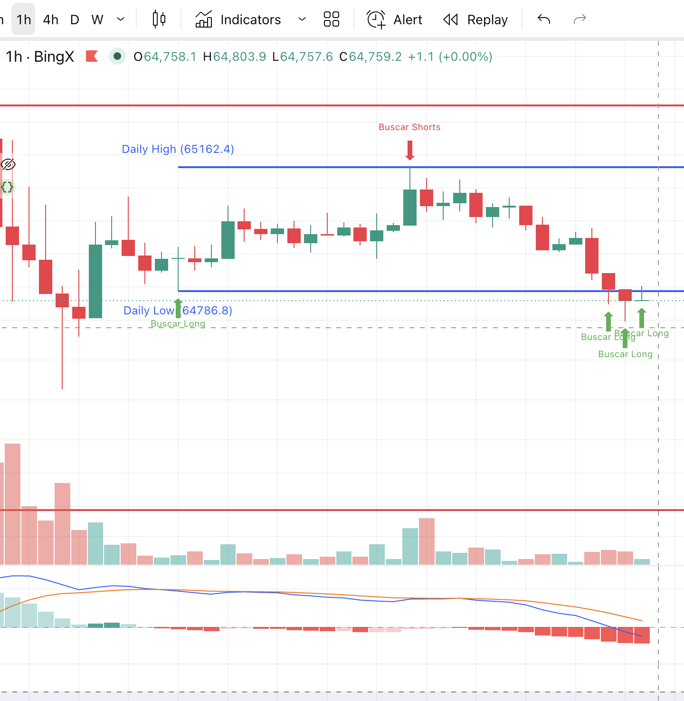
1H · Testeo del Daily Low — se espera el cierre antes de buscar el long
FASE 2
Parámetros de orden
5 / 31
Configuración inicial de gestión de riesgo, fijada en el momento de la ejecución.
EJECUCIÓN
Entrada en 5M
Tras la confirmación completa de la Fase 1.
STOP LOSS
−150 a −200 USD
Por debajo del mínimo de 1H.
TAKE PROFIT 1
+200 a +300 USD
Avance en la cotización desde la entrada.
TAKE PROFIT 2
PDH / DH
Nivel clave de Prev Day High / Daily High.
R:R DE REFERENCIA
Riesgo ≈150–200 USD contra TP1 de 200–300 USD ya ofrece un ratio cercano a 1:1.5, con TP2 en PDH/DH extendiendo el objetivo cuando la tendencia acompaña.
Todos los niveles se fijan antes de gestionar la operación en vivo
FASE 3
Gestión activa en vivo
6 / 31
Reglas de protección de capital y control de codicia una vez la operación está abierta.
Protección a Break-Even
Tan pronto BTC avance +150 a +200 USD a favor, mover el SL a Break-Even (entrada + comisiones).
Filtro de agotamiento (2–3 intentos fallidos)
Si el precio llega a la zona de +100 a +150 USD y es rechazado 3 veces en la misma estructura sin romper → cerrar manualmente al mercado o ajustar el SL a +50 USD.
Regla inviolable de salida
Si un trade alcanzó +150 USD de movimiento a favor, nunca puede terminar en pérdida. Peor escenario aceptable: $0 (Break-Even).
REGLA DE MENTALIDAD
Si el mercado prueba 2–3 veces la misma resistencia en positivo y no logra romperla, la liquidez compradora se ha agotado. Aceptar la ganancia parcial o salir en Break-Even es buena gestión; esperar a que se dé vuelta hasta el SL es un error operativo.
Peor caso aceptable tras +150 USD a favor: Break-Even, nunca pérdida
ANEXO · EJEMPLO OPERADO
🟢 Estrategia LONG — Reacción en soporte diario
7 / 31
1. CONTEXTO MACRO (1H)
Captura de liquidez: el precio cae hasta la zona de mínimos anteriores (Prev Day Low 64,143.4 y Daily Low 64,130.2). Absorción: las velas dejan mecha por debajo del nivel — el mercado busca los Stop Losses (sell-side liquidity) antes de impulsar al alza. MACD hace cruce alcista con histograma positivo justo cuando el precio rechaza los mínimos.
2. CONFIRMACIÓN MICRO (5M)
Doble manipulación: dos toques claros al Daily Low; el segundo rompe el nivel unos instantes para barrer compradores impacientes y activar stops. Reclaim: entra volumen comprador y la vela cierra sobre la línea azul, confirmando el falso rompimiento (fakeout).
3. PLAN DE EJECUCIÓN
Entrada: compra tras la confirmación del rechazo en el Daily Low. SL: 200 puntos bajo el soporte (bajo la mecha de manipulación). TP: liquidez opuesta del rango (Prev Day High).
OBJETIVO
738.4 pts (+1.15%)
R:R DEL EJEMPLO
≈ 1 : 2.75
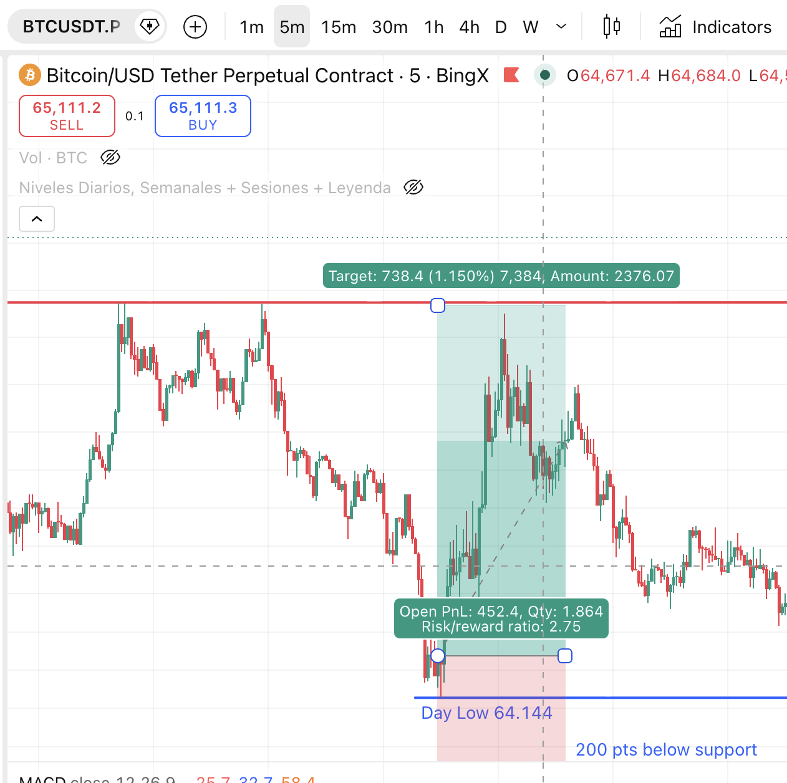
5M · Entrada real sobre Daily Low, SL/TP y R:R marcados
ANEXO · EJEMPLO OPERADO
🔴 Estrategia SHORT — Reacción en resistencia diaria
8 / 31
1. CONTEXTO MACRO (1H)
Captura de liquidez: el precio sube con fuerza a buscar los máximos anteriores (Daily High 65,350.0 y Prev Day High 64,972.9). Absorción/rechazo: la vela de 1H penetra la zona de máximos pero pierde fuerza, deja mecha superior prominente y cierra por debajo del nivel — confirma falta de demanda institucional sobre la resistencia. MACD inicia cruce bajista con el histograma perdiendo volumen alcista justo en el pico.
2. CONFIRMACIÓN MICRO (5M)
Manipulación en máximos: el precio busca activar Buy Stops por encima del Day High (65,365). Fakeout: incapaz de sostener la estructura sobre el máximo diario, pierde el nivel de forma agresiva y retorna al rango. MACD 5M genera cruce bajista claro en la fase de rechazo.
3. PLAN DE EJECUCIÓN
Entrada: venta tras la pérdida y confirmación de rechazo del Daily High. SL: ~200–280 puntos sobre el máximo alcanzado (resistencia local). TP: zona de liquidez compradora del suelo del rango (Daily Low / Prev Day Low).
RIESGO / OBJETIVO
SL 278.9 (0.427%)
TP 826.2 (+1.266%)
R:R DEL EJEMPLO
≈ 1 : 2.96
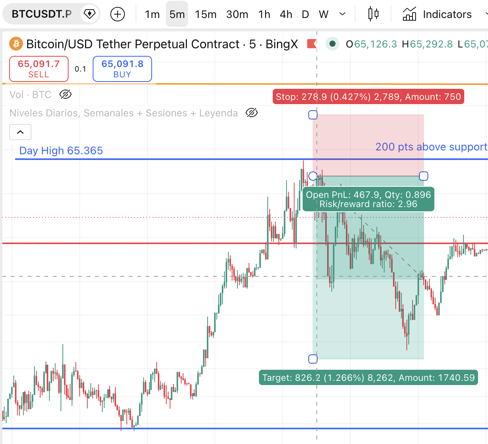
5M · Entrada real sobre Daily High, SL/TP y R:R marcados
ANEXO · CONCEPTOS
Por qué funcionan estos niveles
9 / 31
PDH / PDL — LIQUIDEZ DIARIA
El Prev Day High/Low marca los extremos de la sesión anterior y concentra órdenes de stop y de ruptura de muchos participantes: es donde suele acumularse liquidez.
El precio previo del día alto y bajo actúa como puntos de referencia porque resaltan zonas donde previamente hubo fuerte presión compradora o vendedora, y como muchos traders los vigilan, pueden atraer mayor actividad al ser revisitados.
Por eso la estrategia busca la reacción justo sobre el PDL/DL (fase de absorción en 1H) en vez de operar la ruptura: se opera el rechazo de esa liquidez, no la continuación hacia ella.
Indicador para trazar estos niveles automáticamente: ver página "Configurar TradingView" (01/13).
MACD — FILTRO DE CONFIRMACIÓN
El MACD combina dos medias móviles exponenciales (línea MACD y línea de señal) más un histograma que mide la distancia entre ambas.
Un cruce alcista de la línea MACD sobre la línea de señal, o el histograma pasando de rojo a verde, indica que el momentum bajista se está agotando y el impulso empieza a girar a favor de los compradores.
Exigirlo en 1H antes de gatillar en 5M evita entrar solo por "toque de nivel": el precio debe estar en la zona correcta y mostrar momentum girando a favor.
Fuentes completas en la última página
ANEXO · GESTIÓN DE RIESGO
Tamaño de posición y R:R
10 / 31
Las reglas de esta estrategia fijan el riesgo en dólares por operación (150–200 USD de SL). Para que ese riesgo sea sostenible frente al capital total, se combina con dos principios estándar de gestión:
Regla del 1–2% por operación
No arriesgar más del 1–2% del capital total en un solo trade. El tamaño de posición se deriva de: (capital × % riesgo) ÷ distancia al stop.
Ratio riesgo:beneficio mínimo
Un mínimo de 1:2 es el estándar recomendado para day trading; entre 1:1.5 y 1:3 es habitual en operativa intradía por lo comprimido de los movimientos.
EJEMPLO DE CÁLCULO
Capital: 10,000 USD · Riesgo: 1.5% → 150 USD
SL: 175 USD por debajo de entrada
Tamaño de posición ≈ 150 ÷ 175 ≈ 0.86 BTC nominal (ajustar a apalancamiento/margen del bróker)
Estos dos principios no reemplazan el checklist de entrada: solo aseguran que, incluso si el SL de 150–200 USD se ejecuta varias veces seguidas, ninguna racha de pérdidas comprometa el capital total de la cuenta.
El % de riesgo y el capital son parámetros personales — ajustar antes de operar
SETUP · INDICADOR B EN VIVO
Ejemplo real: short y long en el mismo día
11 / 31
El indicador B marcó "Buscar Long" al tocar el Daily Low y "Buscar Shorts" al tocar el Daily High — la señal para empezar a mirar el gráfico y validar el checklist, sin tener que estar pegado a la pantalla mientras el precio recorre el rango.
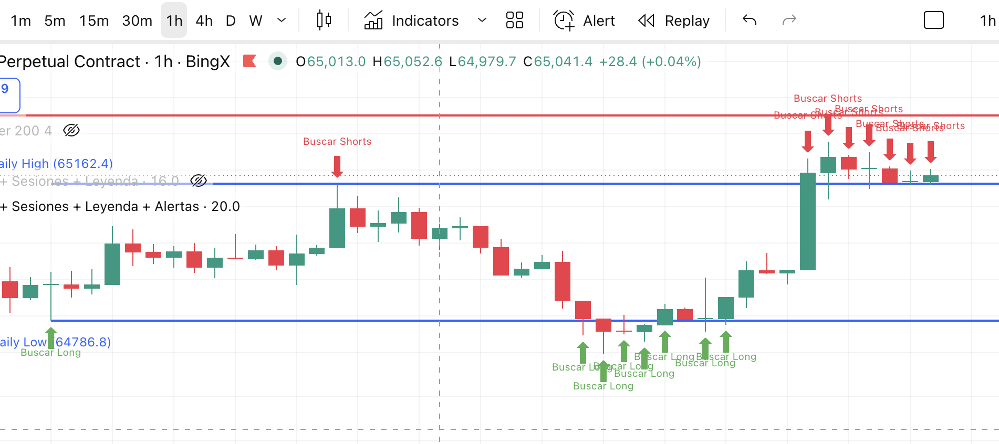
1H · Rotación del día: Daily Low → "Buscar Long" → Daily High → "Buscar Shorts"
EN EL DAILY LOW
"Buscar Long" apenas toca el nivel azul. El precio reacciona, cierra las velas por encima del soporte y rota al alza hasta el Daily High.
EN EL DAILY HIGH
"Buscar Shorts" al llegar a la línea roja. Ahí se aplica el mismo checklist de la Fase 1 (1H) y Fase 1 (5M) para el lado corto.
La flecha es el aviso para empezar a mirar — no es la entrada; el checklist de la Fase 1 sigue siendo obligatorio
SETUP · INDICADOR B EN VIVO
Caso perfecto — sesión de Asia
12 / 31
Ejemplo clarísimo del ciclo completo en la sesión de Asia: el precio toca el Daily Low, el indicador marca "Buscar Long", rota todo el rango hasta el Daily High y ahí marca "Buscar Shorts" — justo donde se agota el impulso comprador.
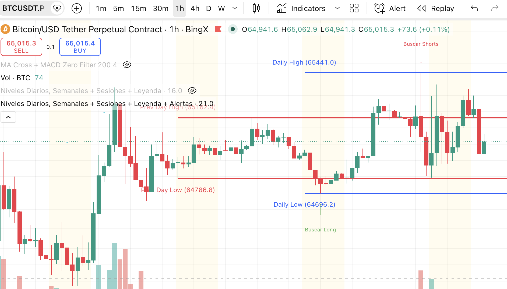
1H · Sesión de Asia: Daily Low (64,696.2) → "Buscar Long" → Daily High (65,441.0) → "Buscar Shorts"
BUSCAR LONG
Señal justo sobre el Daily Low. El precio respeta el nivel y rota al alza atravesando todo el rango diario.
BUSCAR SHORTS
Señal al llegar al Daily High. Ahí se valida el checklist bajista de la Fase 1 antes de considerar la entrada en corto.
La sesión de Asia suele mostrar rangos limpios entre Daily Low y Daily High — ideal para observar el ciclo completo
SETUP · INDICADOR B EN VIVO
Confirmación por agotamiento de MACD (1H + 5M)
13 / 31
Long desde el Daily Low. Tras el toque del nivel, en vez de gatillar solo por el rechazo de precio, se espera a que el histograma del MACD muestre agotamiento en ambos timeframes — 1H y 5M —: barras cada vez más cortas acercándose a cero, señal de que el impulso vendedor se está quedando sin fuerza antes del giro.
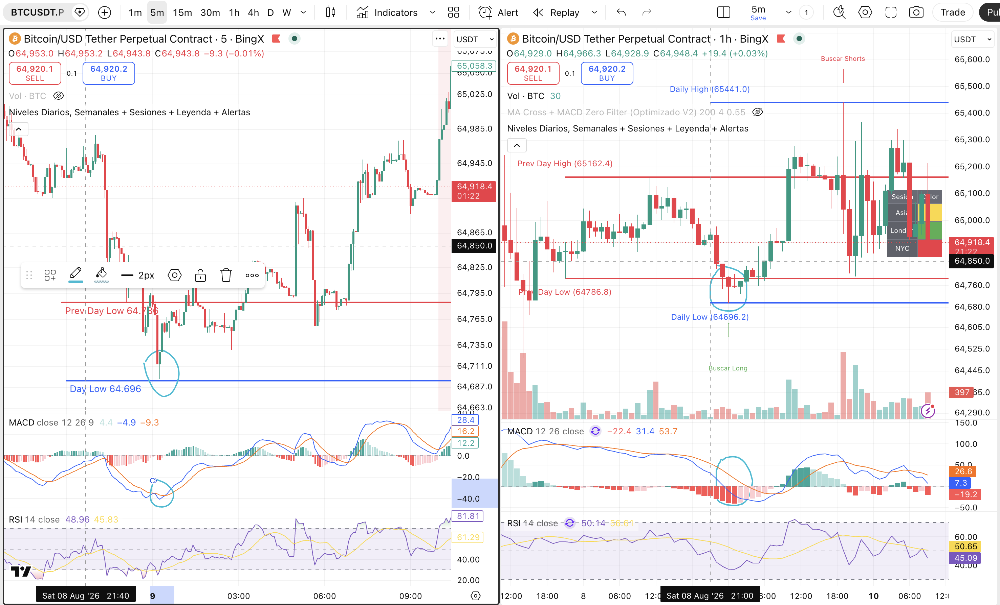
1H + 5M · Daily Low (64,696.2) · histograma MACD agotando en ambos timeframes antes del giro alcista
1H — CONTEXTO
El precio toca el Daily Low y las barras rojas del histograma se acortan sesión tras sesión — la presión vendedora se está agotando sobre el nivel.
5M — CONFIRMACIÓN
Mismo agotamiento visible en el timeframe menor, en simultáneo con el de 1H — doble confirmación antes de gatillar el long.
Agotamiento simultáneo del histograma en 1H y 5M — confirmación adicional de cambio de dirección en el nivel
SETUP · INDICADOR B EN VIVO
Confirmación por agotamiento de MACD (1H + 5M) · short
14 / 31
Espejo bajista del caso anterior: short desde el Daily High. Al tocar el nivel, en vez de gatillar solo por el rechazo de precio, se espera a que el histograma del MACD muestre agotamiento en ambos timeframes — 1H y 5M —: barras verdes cada vez más cortas acercándose a cero, señal de que el impulso comprador se está quedando sin fuerza antes del giro.

1H + 5M · Daily High · histograma MACD agotando en ambos timeframes antes del giro bajista
1H — CONTEXTO
El precio toca el Daily High y las barras verdes del histograma se acortan sesión tras sesión — la presión compradora se está agotando sobre el nivel.
5M — CONFIRMACIÓN
Mismo agotamiento visible en el timeframe menor, en simultáneo con el de 1H — doble confirmación antes de gatillar el short.
Agotamiento simultáneo del histograma en 1H y 5M — mismo principio del long, aplicado en resistencia
SETUP · INDICADOR B EN VIVO
Caso donde hay que esperar: "Buscar" no es "Entrar"
15 / 31
La vela de 1H acaba de cruzar el Daily Low — por eso el indicador marca "Buscar Long" y no "Entrar". Hay que esperar a que esa vela termine de desarrollarse y, en 5M, el precio cierre con fuerza al menos una vela completa con cuerpo por encima del límite. Si no lo logra, el long se invalida y el plan pasa a buscar un trade hacia el límite low semanal.
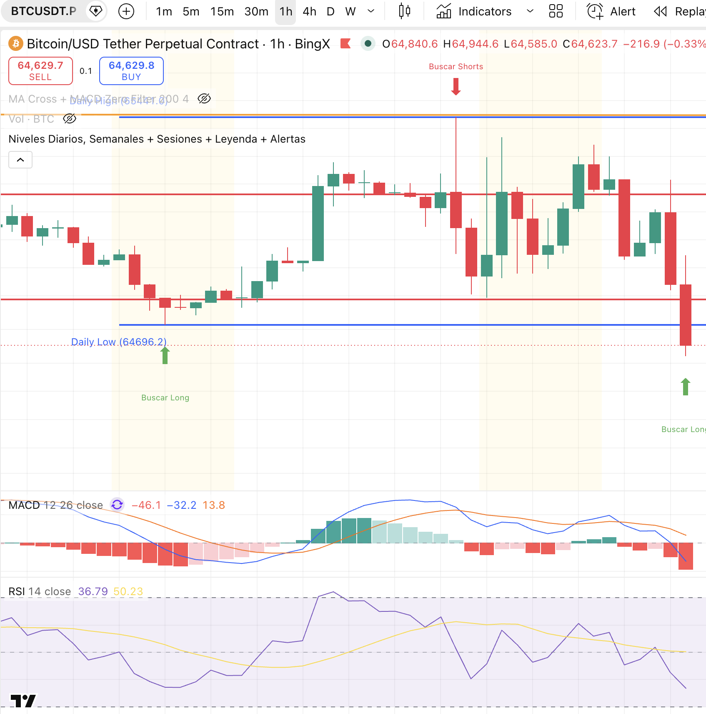
1H · Cruce del Daily Low (64,696.2) · "Buscar Long" en desarrollo, aún sin cierre válido
"Buscar" es la señal para empezar a mirar — la entrada exige el cierre de vela con cuerpo confirmado
SETUP · INDICADOR B EN VIVO
"Buscar" no es "Entrar": confirmación en 5M
16 / 31
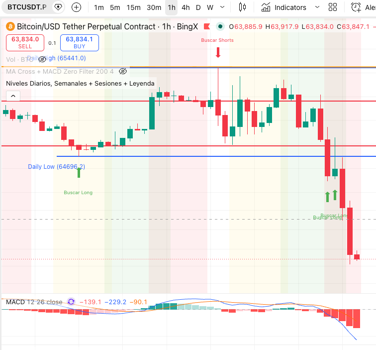
1H · Ninguna vela cierra aún con cuerpo por encima del Daily Low — rechazo fuerte, el long sigue sin confirmarse
CONDICIÓN PARA VALIDAR EL LONG
En 5M, al menos una vela completa debe cerrar con el cuerpo por encima del Daily Low — recláim real del nivel, no solo mecha.
SI NO SE CONFIRMA
El long queda invalidado — el plan pasa a buscar la reacción en el límite low semanal, la siguiente zona de liquidez relevante.
SIGUIENTE PASO SI EL LONG QUEDA INVALIDADO
Con el long invalidado, hay tres caminos: esperar a que el precio llegue hasta el límite semanal bajo (62,300 en este momento); esperar una nueva reversión antes de ese nivel; o buscar cambios de precio mañana, usando los límites de hoy como parámetros de referencia.
"Buscar" es la señal para empezar a mirar — la entrada exige el cierre de vela con cuerpo confirmado
SETUP · INDICADOR B EN VIVO
Resolución del caso: rechazo y regla de 3 intentos
17 / 31
RESOLUCIÓN EN VIVO
El long no confirmó — el precio no cerró con cuerpo por encima del Daily Low. Al caer y rebotar, el precio volvió a testear el Prev Day Low (64,700), ahora convertido en resistencia, y fue rechazado 3 veces consecutivas. Se entró rápido en corto en 64,700 y se salió rápido en 64,821, aplicando la regla de 3 intentos fallidos (Fase 3) en vez de esperar una reversión más amplia. El long original puede volver a plantearse si, en la caída en curso, el precio toca el soporte del Daily Low y rebota de nuevo hacia arriba.
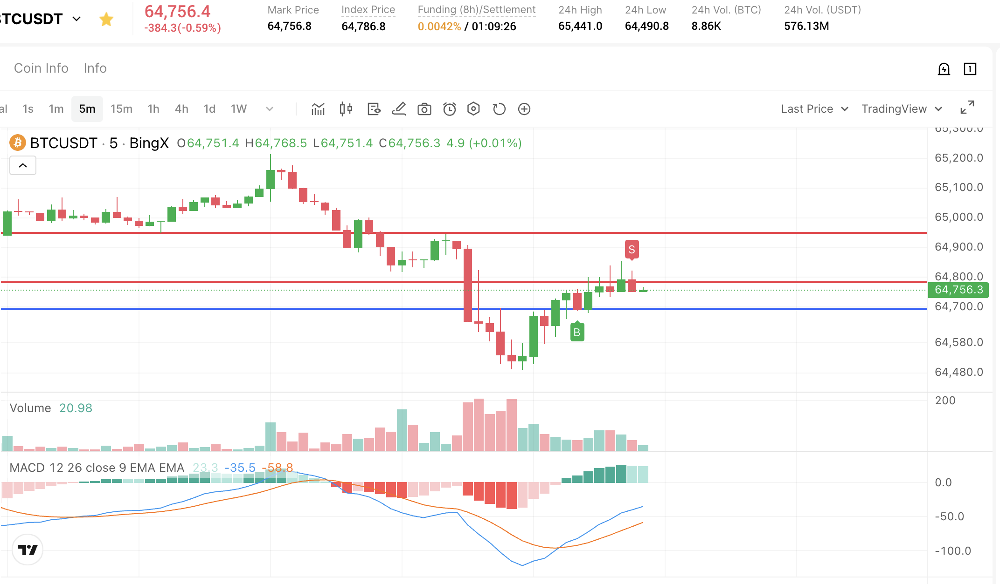
5M · Corto 64,700 → cierre 64,821 tras 3 rechazos en el Prev Day Low (resistencia) — salida rápida por regla de 3 intentos
"Buscar" es la señal para empezar a mirar — la entrada exige el cierre de vela con cuerpo confirmado
SETUP · INDICADOR B EN VIVO
Por qué era "muy rápido o nada"
18 / 31
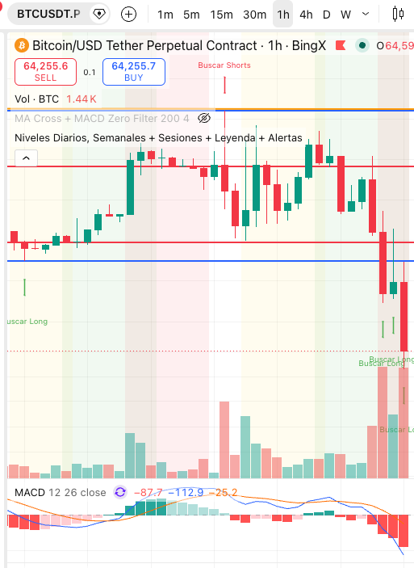
1H · Rechazo fuerte sobre "Buscar Shorts" — MACD acelerando a la baja (−87.7 → −112.9) sin cruce previo confirmado
POR QUÉ ERA "MUY RÁPIDO O NADA"
El rechazo llegó con velas rojas de cuerpo grande y el histograma del MACD acelerando a la baja de golpe — pero la señal "Buscar Shorts" apareció antes de que la tendencia en 1H terminara de girar: no hubo un cruce de MA ni un cierre de vela que confirmara el cambio de estructura. Entrar exigía reaccionar en el mismo impulso del rechazo, con stop ajustado y salida inmediata al primer signo de pausa — si esa ventana se pierde, no hay entrada válida: perseguir el nivel después, sin confirmación de tendencia, es operar contra la estructura todavía vigente.
"Buscar" es la señal para empezar a mirar — la entrada exige el cierre de vela con cuerpo confirmado
CASO 3 · SOPORTE PERDIDO
Cuando el soporte del día anterior no aguanta
19 / 31
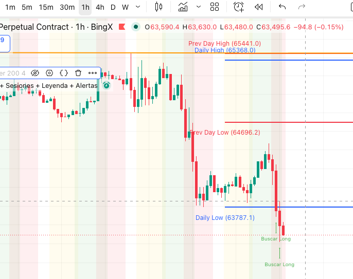
1H · El Prev Day Low (64,696.2) se pierde con velas de cuerpo grande — el precio no rebota, busca el Daily Low (63,787.1)
REGLA DE INVALIDACIÓN
El plan largo se apoya en que el nivel aguante. Si el precio lo atraviesa y sigue cayendo con cuerpo, el soporte dejó de existir: la señal "Buscar Long" queda invalidada y no se persigue. Un nivel roto no es una oportunidad más barata — es una estructura distinta, y el siguiente punto de decisión pasa a ser el nivel inferior.
Nivel perdido = setup cancelado — se espera al siguiente nivel, no se promedia contra la caída
CASO 3 · SOPORTE PERDIDO
La entrada existió — pero solo en la apertura europea
20 / 31
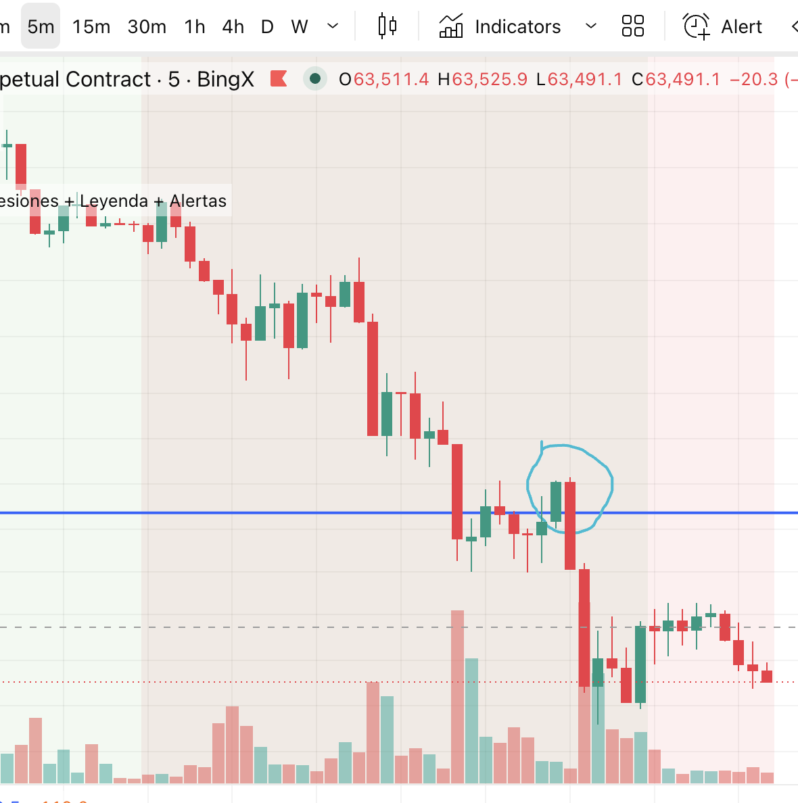
5M · Las velas marcadas son la única ventana operable: nacen y cierran con cuerpo por encima del nivel, en el arranque de la sesión europea (~3:00 AM)
LA VENTANA REAL
La reacción válida ocurrió con la apertura de Europa: el volumen que sostiene un rebote aparece cuando entra la sesión, no en las horas muertas previas.
Y POR QUÉ SE CERRÓ
El impulso no sostuvo: la vela siguiente rompió el nivel a la baja con cuerpo grande. Ahí el setup muere — la salida es inmediata, no se le da margen.
El horario importa tanto como el nivel — sin sesión activa, el rebote no tiene quién lo sostenga
CASO 3 · CONFIRMACIÓN
Cómo se confirma que el soporte aguanta
21 / 31
1 · CONFIRMACIÓN MÍNIMA (5M)
Al menos una vela de 5M completa por encima del soporte: que abra arriba y cierre con cuerpo arriba. No cuenta la vela que nace por debajo y termina por encima — esa es recuperación dentro del nivel, no aceptación por encima de él.
2 · CONFIRMACIÓN DURA (1H)
Una vela de 1H que cierra en la dirección buscada y del lado correcto del nivel: verde y por encima del soporte para largos, roja y por debajo de la resistencia para cortos. Más lenta, pero es la que valida el cambio de estructura.
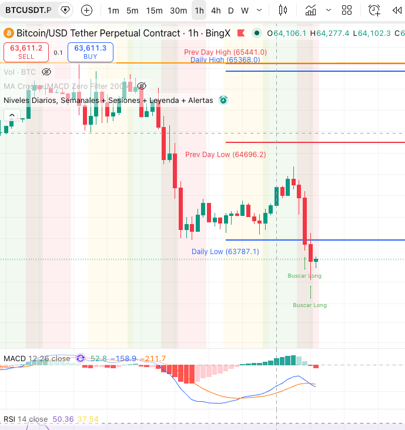
1H · "Buscar Long" en el Daily Low (63,787.1) — la señal abre la vigilancia; la vela de 1H que cierre verde sobre el nivel es la que confirma
5M para el gatillo rápido, 1H para la confirmación estructural — sin ninguna de las dos, no hay entrada
CASO · ESTRUCTURA DEL DÍA
Rebote hasta el day high, retroceso al daily low
22 / 31
Día con movimiento limpio y legible en las tres temporalidades: rebote desde el daily low que llega casi a tocar el day high anterior, y luego retroceso de vuelta al daily low, donde aparece algo de resistencia en la baja marcada por el daily low del día antes del anterior. El precio fue a buscar los 64,400.
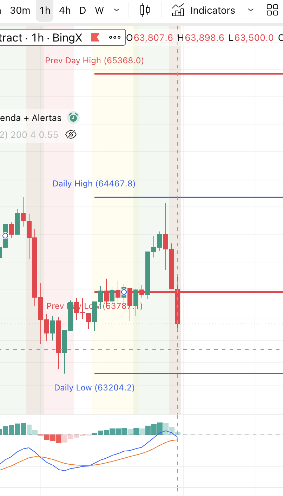
1H · Estructura completa: Daily Low 63,204.2 → impulso hasta el Daily High 64,467.8 → retroceso al Prev Day Low 63,787.1
La lectura empieza siempre en 1H: define el rango del día y dónde vale la pena esperar reacción
CASO · DOS INTENTOS RECHAZADOS
El nivel se probó dos veces antes de ceder
23 / 31
En 15M se ven los dos intentos del precio contra el nivel, ambos rechazados: el rango se comprime alrededor del Prev Day Low sin que ninguna vela consiga sostenerse con cuerpo del lado correcto. Dos rechazos no invalidan el setup — pero sí obligan a esperar la confirmación en lugar de anticiparla.
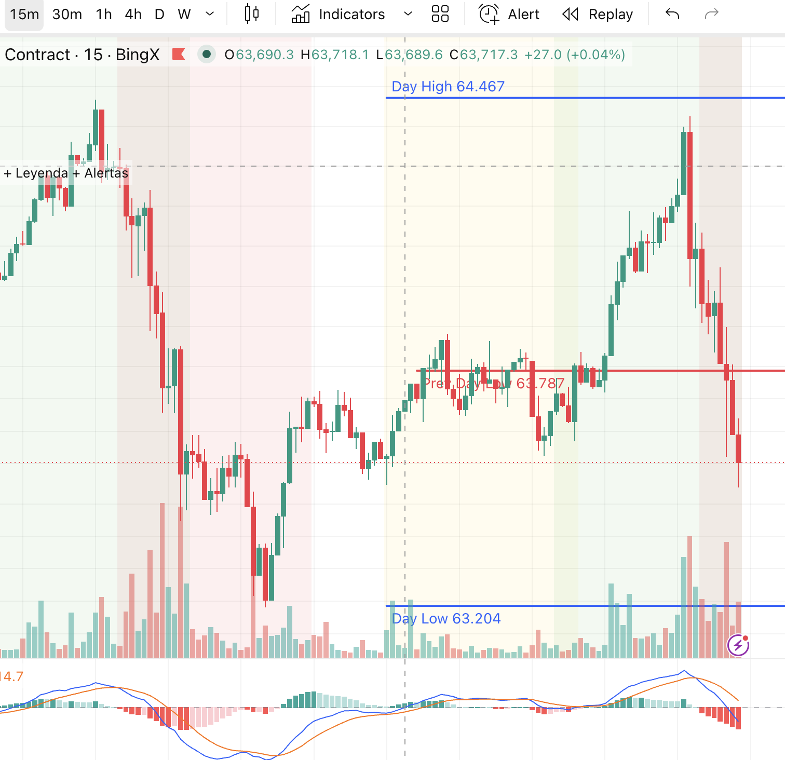
15M · Dos intentos con rechazo en el Prev Day Low 63,787 — compresión antes de la resolución
Cada rechazo consume liquidez del nivel — al tercer intento la probabilidad de ruptura sube
CASO · GATILLO EN 5M
La confirmación de entrada, marcada en 5M
24 / 31
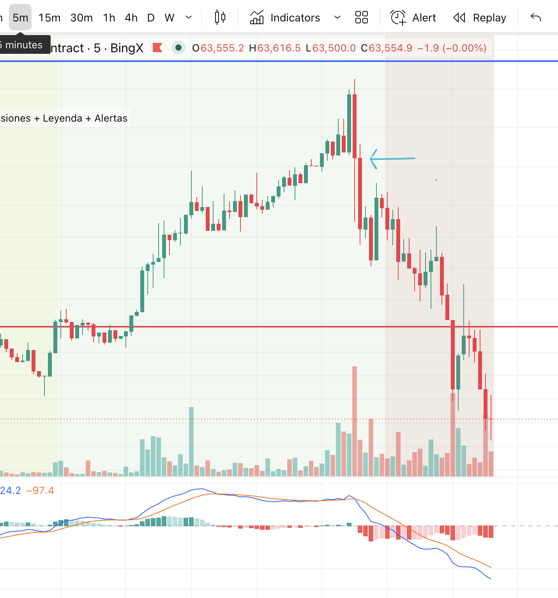
5M · Flecha: vela de confirmación — cierre con cuerpo del lado correcto tras el agotamiento del impulso, con MACD girando (−124.2 / −97.4)
LO QUE VALIDA ESTA VELA
Después de los dos intentos rechazados, la vela marcada es la primera que cierra con cuerpo completo del lado que buscábamos, acompañada por el giro del MACD y por volumen en expansión. Ese es el gatillo: sin esa vela cerrada, los dos rechazos anteriores solo eran ruido en el nivel.
1H define el escenario · 15M cuenta los intentos · 5M da el gatillo
CASO · APERTURA DE ASIA
La señal que el indicador no marcó
25 / 31
Movimiento limpio desde las 23:00, con la apertura de Asia ya iniciada. El precio venía llevando horas pegado al límite low del día, y desde ahí salió a buscar liquidez al high del día: un tramo de ~6 puntos en una sola dirección, sin retrocesos que lo interrumpieran.
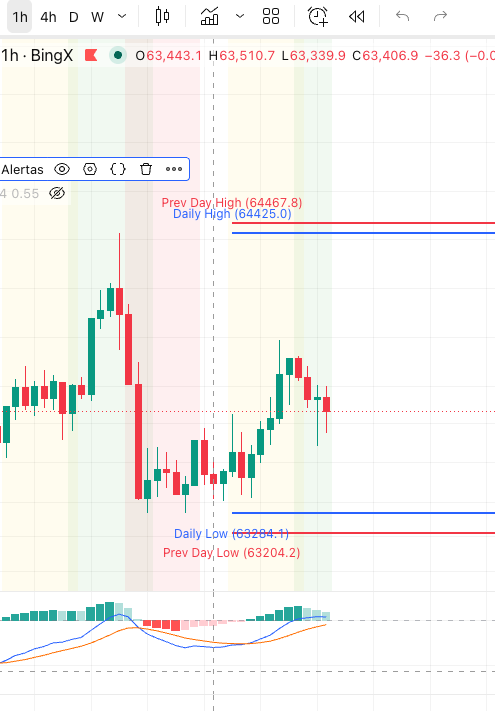
1H · Horas apoyado sobre el Daily Low (63,284.1) / Prev Day Low (63,204.2) antes de la expansión hacia el Daily High (64,425.0)
Cuando el precio pasa horas apoyado en un límite, el movimiento suele ir a buscar el límite opuesto
CASO · LECTURA SIN SEÑAL
Rondar el nivel equivale a tocarlo
26 / 31
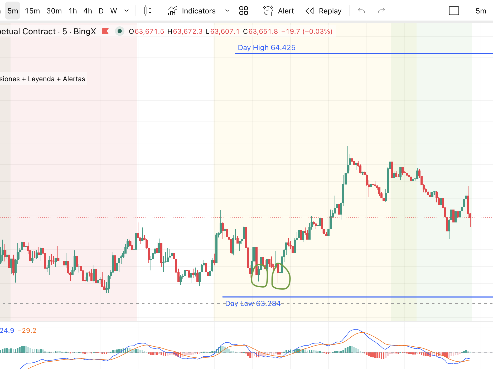
5M · Las dos velas marcadas se apoyan sobre el Day Low 63,284 sin llegar a tocarlo — desde ahí arranca el tramo hasta el Day High 64,425
POR QUÉ NO APARECIÓ "BUSCAR LONG"
El indicador nunca marcó la señal porque el precio no alcanzó a tocar la línea del nivel — le faltaron unos pocos puntos. Pero la lectura es la misma: quedarse rondando el límite durante muchas velas sin llegar a tocarlo indica exactamente lo que el toque indicaría — que el nivel está siendo respetado y que la presión se está acumulando del lado contrario. El indicador necesita un contacto exacto; la estructura no. Cuando la proximidad se sostiene vela tras vela, la señal existe aunque el indicador no la dibuje.
El indicador es una ayuda de lectura, no la condición — la estructura manda
EJECUCIÓN REAL · DOS LONGS EN EL MISMO RANGO
El rango se operó dos veces, del low al high
27 / 31
Dos operaciones reales, ambas en long, ejecutadas dentro del mismo rango delimitado por las líneas azules del día. Cada par B → S es una entrada de compra y su cierre de venta: el mismo nivel bajo dio dos veces la reacción, y el rango se cobró dos veces en la misma dirección.
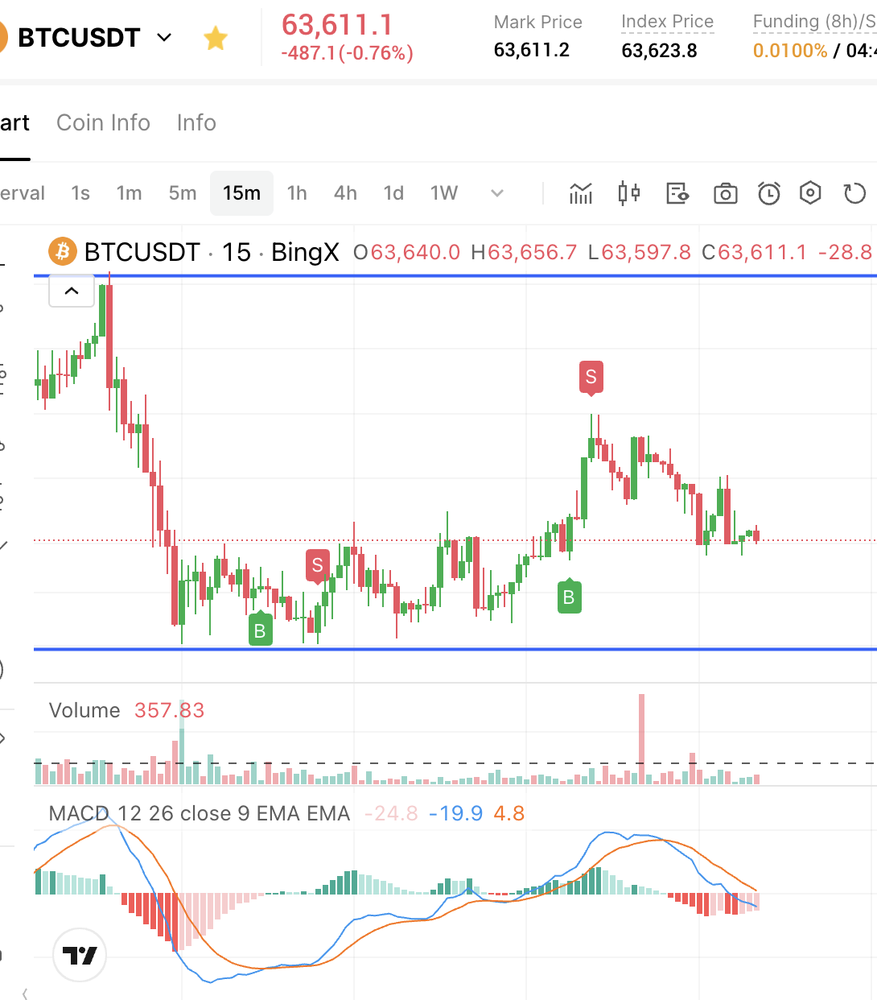
15M · Dos ciclos B→S: primer long desde la base del rango, segundo long cerrado contra el techo con volumen en expansión
PRIMER LONG · DESDE LA BASE
Entrada sobre el límite bajo del rango con el MACD saliendo del mínimo. La salida llega en la primera resistencia intermedia — objetivo corto, sin pretender el techo.
SEGUNDO LONG · HASTA EL TECHO
Segunda entrada tras la consolidación, sostenida hasta el pico del movimiento: la salida coincide con el pico de volumen y el giro del MACD.
Un nivel que funciona una vez merece que lo esperes de nuevo — mientras el rango siga intacto
DÓNDE ENTRAR · RETEST + PRIMER DESCANSO
El retest aguanta, la entrada llega en el primer new high
28 / 31
Este es el caso de manual para ubicar la entrada. El precio baja a probar el soporte, el retest aguanta y rebota al alza. A partir de ahí no se persigue el impulso: se espera el primer descanso en 5M — la primera vela roja de pausa, con todo el cuerpo por encima del soporte — y se entra en el primer new high que la supera.
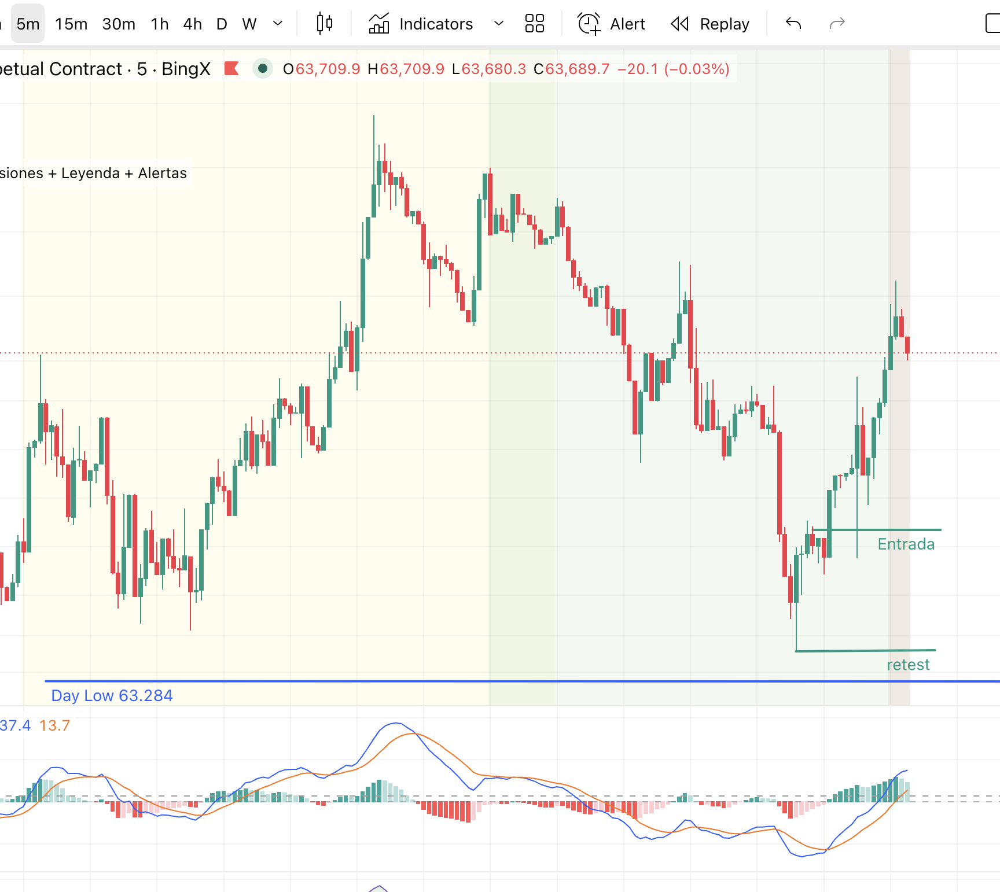
5M · "retest" sobre el Day Low 63,284 → rebote → vela roja de descanso por encima del nivel → "Entrada" en el primer new high, con MACD ya cruzado al alza
No se entra en el rebote — se entra cuando el descanso demuestra que el soporte quedó abajo
DÓNDE ENTRAR · LA MISMA VELA EN 1H
Cómo estaba la vela y cómo terminó
29 / 31
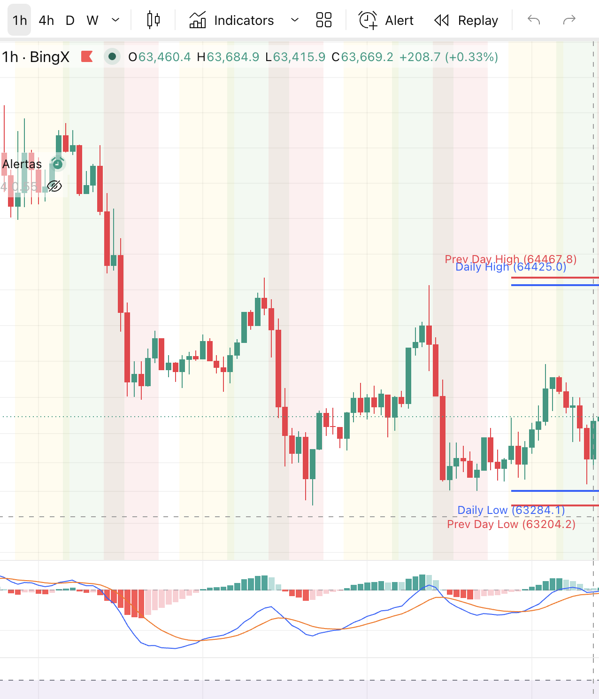
1H · La vela del retest se apoya en el Daily Low (63,284.1) / Prev Day Low (63,204.2) y cierra verde: O 63,460.4 → C 63,669.2 (+0.33%)
LA SECUENCIA, EN ORDEN
1. El precio baja y hace retest del soporte. 2. Rebota: el nivel aguantó. 3. Se espera el primer descanso en 5M — vela roja de pausa, sin que ningún cuerpo vuelva por debajo del soporte. 4. Entrada en el primer new high que rompe esa vela de descanso. 5. En 1H, la misma vela confirma la lectura: mecha larga hacia el nivel y cierre verde bien por encima — el rechazo quedó impreso en la temporalidad mayor.
5M ubica el gatillo · 1H confirma que el nivel realmente aguantó
ANEXO · GRÁFICOS DE EJEMPLO
Galería de reacciones anotadas
30 / 31
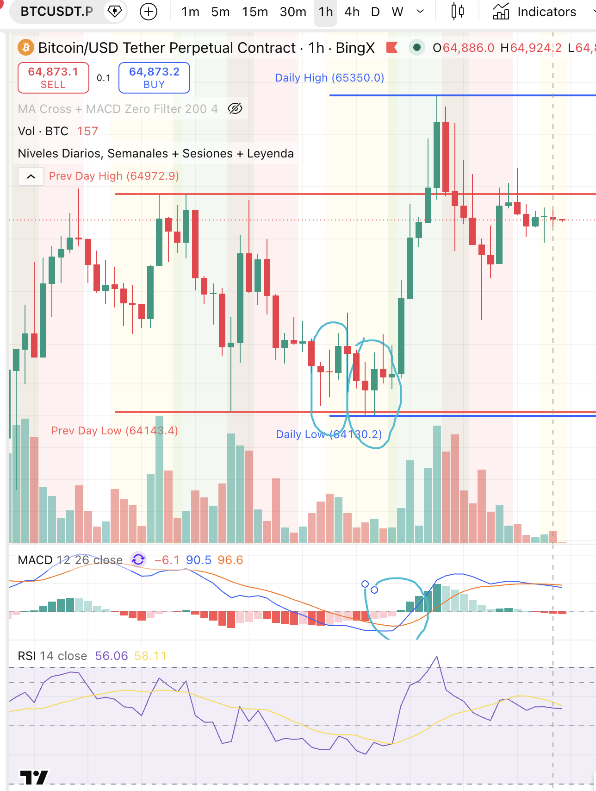
1H · Reacción y giro de MACD sobre PDL/DL (setup largo)
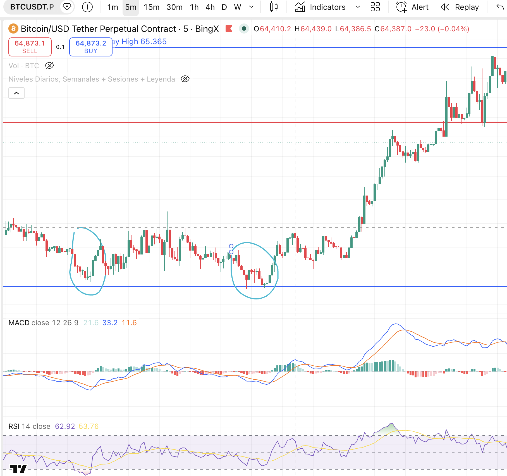
5M · Doble suelo / gatillo de entrada sobre el nivel (setup largo)
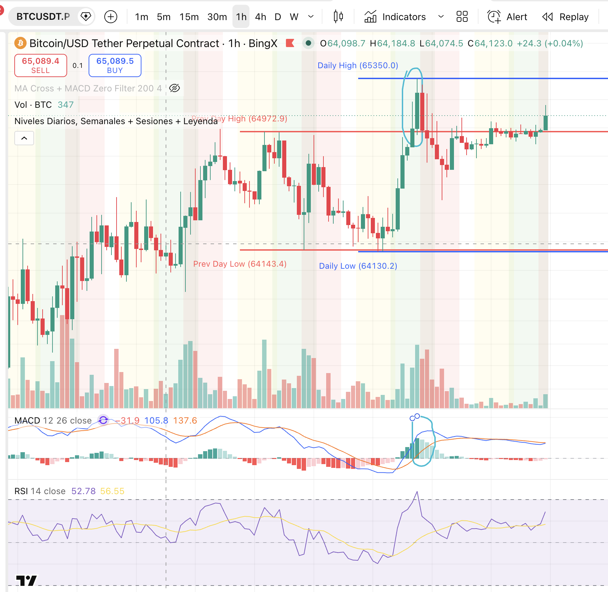
1H · Espejo bajista: rechazo sobre PDH/DH (setup corto)
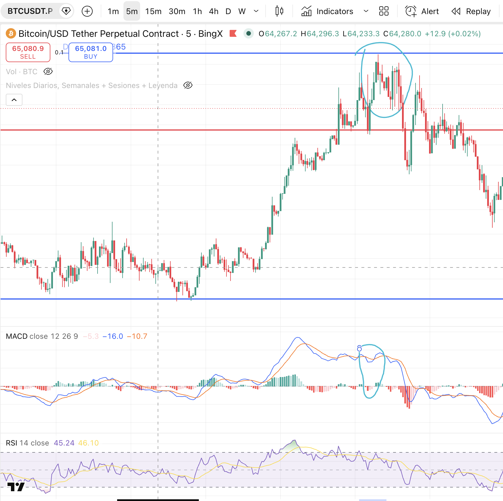
5M · Gatillo de entrada bajo resistencia (setup corto)
La estructura del checklist está escrita para el lado largo (soporte); el mismo patrón se refleja en corto sobre PDH/DH.
Fuentes y disclaimer
31 / 31
DISCLAIMER
Este documento es únicamente de carácter informativo y educativo: resume reglas de trading personales para BTC junto con conceptos de mercado de dominio público (PDH/PDL, MACD, gestión de riesgo). No constituye asesoría financiera, de inversión ni de ningún otro tipo, y no debe interpretarse como una recomendación de compra o venta. Operar con criptomonedas y con apalancamiento conlleva un riesgo real y significativo de pérdida de capital — incluida la pérdida total del dinero invertido. Cada persona es responsable de sus propias decisiones de trading.
Estrategia Reacción en Liquidez Diaria — BTC · documento de uso personal